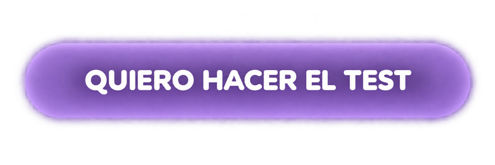

♡
Está bien sentir
No tenés que entender todo lo que estás sintiendo hoy.
UN MOMENTO PARA VOS
Hacé este breve test de 1 minuto y descubrí qué necesitás emocionalmente hoy. Al final, te voy a recomendar un audio de calma especialmente pensado para acompañarte en este momento.

🎧
Un momento pensado para acompañarte
después del diagnóstico.
TU MOMENTO
Un audio de acompañamiento creado para que puedas hacer una pausa, respirar y darte permiso para sentir lo que estás viviendo.
Primero descubrí qué necesitás hoy.
El test te va a guiar hacia el momento de calma
que más se conecta con vos.
Solo necesitás darte un pequeño espacio.
No tenés que entender todo lo que estás sintiendo hoy.
Hay momentos en los que simplemente necesitamos sentirnos acompañadas.
No tenés que seguir buscando respuestas durante todo el día.
Hoy no necesitás saber cómo será todo mañana.